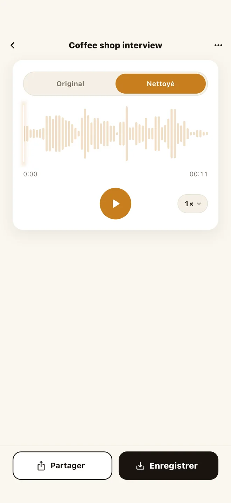

En un coup d’œil
Les quatre points que la plupart des gens veulent connaître en premier. Tous les détails, avec leur source, figurent dans le tableau complet plus bas.
| Application | Sans envoi | Sans compte | Hors ligne | Enregistrement gratuit |
|---|---|---|---|---|
| NoisyNo | ✓Oui | ✓Oui | ✓Oui | ✓Oui |
| Denoise | ✓Oui | –Non précisé | –Non précisé | Payant |
| Denoise.FX | ✓Oui | –Non précisé | ✓Oui | –Non précisé |
| Audio Cleaner | ✓Oui | –Non précisé | –Non précisé | –Non précisé |
| PureVoice | ✓Oui | –Non précisé | ✓Oui | Annoncé gratuit |
| NoiseKill | ✓Oui | ✓Oui | ✓Oui | Avec pubs |
| Offline AI Video Noise Remover | ✓Oui | ✓Oui | ✓Oui | 2 par jour |
| Adobe Podcast | ✗Non | ✗Non | ✗Non | 1 heure par jour |
| LALAL.AI | ✗Non | ✗Non | Pas sur téléphone | Aperçus seulement |
✓ oui · ✗ non · – non précisé par l’éditeur
Le tableau complet
Les mêmes neuf applications, avec le détail derrière chaque réponse. Les sept premières nettoient sur le téléphone ; les deux dernières sont des services cloud. Les prix sont ceux de l’App Store, de Google Play ou des éditeurs aux États-Unis, en dollars US, et quand un éditeur ne précise pas un point, la cellule indique non précisé.
Faites défiler le tableau horizontalement pour voir toutes les colonnes →
Applications anti-bruit telles que décrites par leurs éditeurs, vérifiées le 26 novembre 2026. Les numéros en exposant renvoient aux sources.
| Application | Envoie votre audio sur un serveur ? | Compte requis ? | Modèle de prix | Plateformes | Ce qui est gratuit / limites d’export | Fonctionne hors ligne ? | Nettoie la vidéo ? |
|---|---|---|---|---|---|---|---|
| Le nettoyage se fait sur l’appareil | |||||||
| NoisyNoGrayForge (ce site) | Non. Les fichiers sont nettoyés sur l’appareil ; les diagnostics limités ne contiennent ni noms de fichiers ni audio.12 | Non.13 | Téléchargement gratuit ; suppression du bruit gratuite quelle que soit la durée. Pro : achat unique, sans abonnement : $5.99 sur iPhone, iPad et Android ; $7.99 sur Mac, acheté séparément.23 | iPhone, iPad (iOS 15+), Mac (macOS 13.4+), Android234 | Audio nettoyé en M4A (AAC), gratuit, quelle que soit la durée. Le WAV sans perte, la vidéo nettoyée, le traitement par lots, la normalisation du volume et le découpage demandent Pro.12 | Oui, une fois installé.13 | Oui. En gratuit, l’audio nettoyé est enregistré ; Pro rend l’extrait sous forme de vidéo, avec seulement le son remplacé.2 |
| Denoise: AI Noise RemoverRoutes Software SRL | Non. La fiche indique que rien n’est envoyé.5 | Non précisé5 | Téléchargement gratuit. 3 exports pour $1.99, ou Denoise Pro : $14.99 à vie ou un abonnement mensuel.5 | iPhone, iPad (iOS 17+), Mac à puce Apple5 | Le nettoyage et l’écoute sont gratuits. Enregistrer ou partager demande Pro ou un pack d’exports. M4A, WAV ou vidéo.5 | Non précisé ; tout s’exécute sur l’appareil.5 | Oui.5 |
| Denoise.FX for Audio & VideoAndrey Ivankin | Non. Le traitement se fait sur l’appareil.6 | Non précisé6 | Téléchargement gratuit. Achats Premium : hebdomadaire ($3.99 ou $4.99), « Early » ($29.99 ou $39.99) et à vie ($39.99 ou $49.99).6 | iPhone (iOS 15+), Mac à puce Apple6 | Ce qui est gratuit n’est pas précisé. Enregistre l’audio dans le format de votre choix et les vidéos dans Photos.6 | Oui ; aucune connexion internet nécessaire.6 | Oui.6 |
| Audio Cleaner: AI DenoiseKnotSmith Ltd. | Non. La suppression du bruit s’exécute en local sur l’iPhone.7 | Non précisé7 | Téléchargement gratuit. Premium : $3.99/semaine, $9.99/an ou $19.99 à vie, plus d’autres achats Premium de $2.99 à $7.99.7 | iPhone (iOS 18+), Mac à puce Apple7 | Ce qui est gratuit n’est pas précisé. Exporte en MP3, WAV, AAC, M4A, et en vidéo MP4 ou MOV.7 | Non précisé ; le traitement s’exécute sur l’appareil.7 | Oui.7 |
| Noise Reducer, PureVoiceOWLMYST | Non. Les fiches indiquent que l’audio ne quitte jamais l’appareil.89 | Non précisé89 | Téléchargement gratuit. La fiche indique que toutes les fonctions sont gratuites ; l’App Store propose aussi un achat Lifetime à $19.99.89 | iPhone (iOS 15.6+), Mac à puce Apple, Android89 | Durée de traitement illimitée annoncée. MP3, WAV, M4A. Ce que débloque Lifetime n’est pas précisé.89 | Oui.89 | Non précisé89 |
| NoiseKill: AI Noise RemoverShahLabs | Non. La fiche indique que rien ne part vers un serveur.10 | Non.10 | Gratuit, financé par la publicité. Aucun achat intégré indiqué.10 | Téléphones et tablettes Android, Chromebook, Android TV10 | Gratuit, sans filigrane. Les fichiers nettoyés sont enregistrés dans la galerie.10 | Oui.10 | Oui ; MP4, MOV, MKV.10 |
| Offline AI Video Noise RemoverAreeb Labs | Non. L’application n’a pas l’autorisation d’accès à internet.11 | Non.11 | Gratuit. Pro : achat unique, sans abonnement.11 | Android11 | Gratuit : 2 enregistrements par jour en durée complète, sans filigrane. Pro : enregistrements illimités. Vidéo MP4, audio M4A.11 | Oui.11 | Oui ; l’image est copiée sans modification.11 |
| Le nettoyage se fait dans le cloud | |||||||
| Adobe Podcast Enhance SpeechAdobe, application web | Oui. Vous envoyez les fichiers dans l’application web.12 | Oui ; l’offre gratuite commence par une inscription.12 | Offre gratuite. Offre Firefly Pro (inclut Adobe Podcast Premium) : $9.99/mois pendant les 6 premiers mois, dans le cadre d’une promotion se terminant le 6 décembre.12 | Navigateur web12 | Gratuit : audio uniquement, un fichier à la fois, jusqu’à 30 minutes et 500 Mo, 1 heure par jour. Payant : fichiers jusqu’à 2 heures et 1 Go, 4 heures par jour.12 | Non ; l’outil fonctionne sur le web.12 | Offre payante uniquement (MP4, MOV et autres)12 |
| LALAL.AI Voice Cleanerlalal.ai | Oui. Les applications mobiles indiquent que tout le traitement s’effectue sur les serveurs cloud de LALAL.AI.131415 | Oui.1314 | Starter gratuit (10 minutes). Lite $90/an, Pro $180/an. Recharges ponctuelles à partir de $50.16 | iPhone, iPad, Android, web, ordinateur131416 | L’offre gratuite ne donne que des aperçus ; télécharger le résultat complet demande une offre payante. Fichiers jusqu’à 200 Mo en gratuit, 2 Go en payant.1316 | Non sur iPhone et Android.1314 | Oui sur le web : MP4, MOV, MKV, AVI, M4V.15 |
Les fiches des stores changent souvent. Les étiquettes de confidentialité (App Privacy) et les sections Sécurité des données (Data safety) sont remplies par les développeurs eux-mêmes ; Apple précise que ses étiquettes ne sont pas vérifiées.
Notre méthode de vérification
GrayForge développe NoisyNo : gardez-le en tête en lisant cette page. Chaque fait concernant une autre application provient de sa propre fiche App Store ou Google Play aux États-Unis, ou du site de l’éditeur, consultés le 26 novembre 2026 ; rien ne vient de sites d’avis ni d’avis d’utilisateurs. Nous n’avons pas passé le même enregistrement dans chaque application : cette page ne les classe donc pas selon la propreté du résultat. Toutes les applications citées se téléchargent ou s’essaient gratuitement, vous pouvez donc entendre la différence vous-même.
NoisyNo, gratuit et Pro
La suppression du bruit est gratuite quelle que soit la durée, sans compte, et l’audio nettoyé est enregistré en M4A (AAC). Pro est un achat unique, sans abonnement : $5.99 sur iPhone, iPad et Android, et $7.99 pour la version Mac, achetée séparément.23



Pro ajoute l’export de la vidéo nettoyée, le WAV 16 bits sans perte, le traitement par lots, la normalisation du volume vers les cibles livre audio (−18 LUFS), podcast (−16 LUFS) ou vidéo et streaming (−14 LUFS), et le découpage avant nettoyage.2
Ce que le tableau ne montre pas
- NoisyNo retire la couche de bruit constante sous une voix (ronflement, souffle, ventilateurs, climatisation, vent, ambiance de pièce, circulation) et est optimisé pour la parole, pas pour la musique. Parmi les applications sur l’appareil citées ici, seuls NoisyNo et PureVoice sont à la fois sur l’App Store et sur Google Play.12 Le guide du traitement sur l’appareil montre tout le déroulé.
- Denoise a la boîte à outils la plus fournie : il réduit aussi l’écho de la pièce, égalise le volume, nettoie pendant l’enregistrement, permet le montage, raccourcit les longues pauses, sépare la voix de la musique et vend du temps de transcription.5
- Denoise.FX est l’application iPhone sur l’appareil la plus notée de cette sélection (4,5 étoiles sur 435 notes aux États-Unis). Vous pouvez régler l’algorithme à la main et ajouter des filtres de fréquence, et son étiquette de confidentialité mentionne l’historique d’achats et un identifiant utilisateur comme données liées à vous.6
- Audio Cleaner propose un réglage d’intensité avec comparaison avant/après, ainsi qu’un égaliseur, des effets et des préréglages, et peut récupérer des fichiers depuis un ordinateur via le Wi-Fi.7
- PureVoice indique ne collecter aucune donnée sur les deux stores, mais ses deux fiches ont été mises à jour pour la dernière fois en août 2025.89
- NoiseKill fait écouter un court aperçu A/B avant de nettoyer tout le fichier, avec les réglages Gentle, Balanced et Strong. C’est une petite application, avec plus de 100 téléchargements.10
- Offline AI Video Noise Remover vous permet de maintenir appuyé pour entendre l’original pendant la lecture et propose un renforcement de la voix pour les paroles faibles. Elle est récente : la version actuelle est sa première publication.11
- L’offre payante d’Adobe Podcast est fournie avec l’offre Firefly Pro d’Adobe et ajoute la vidéo, l’envoi groupé et un réglage d’intensité. Notre comparatif Dictaphone le présente aux côtés de Kapwing.12
- LALAL.AI Voice Cleaner supprime aussi la musique de fond, les grondements du micro et les plosives, et propose un réglage De-Echo.15
À voir aussi : Auphonic, un service web pour podcasteurs qui réduit le bruit et la réverbération, gratuit 2 heures par mois avec un jingle1718 ; Audio Noise Remover & Reducer sur iPhone, gratuit, avec une étiquette « Data Not Collected » (aucune donnée collectée) mais uniquement sous iOS 2619 ; et sur Android, Noise Reducer: Clean Audio, qui ne déclare aucune autorisation20, et NoiseFix21. Sur iPhone, l’option Améliorer l’enregistrement de l’app Dictaphone est traitée dans notre page Améliorer l’enregistrement vs NoisyNo.
Laquelle utiliser, et quand
- Vous voulez un fichier nettoyé à garder ou à envoyer, gratuitement. NoisyNo enregistre l’audio nettoyé en M4A quelle que soit la durée, sans rien payer. Sur Android, NoiseKill (avec publicités) et Offline AI Video Noise Remover (deux enregistrements par jour) sont gratuits aussi.
- La voix se trouve dans une vidéo et vous voulez récupérer la vidéo. NoiseKill et Offline AI Video Noise Remover enregistrent la vidéo gratuitement sur Android. Sur iPhone, Denoise enregistre la vidéo après un achat, tout comme NoisyNo avec Pro ; Denoise.FX et Audio Cleaner enregistrent aussi la vidéo mais ne disent pas ce qui est gratuit.
- Vous voulez monter autant que nettoyer. Denoise enregistre, coupe, fusionne, raccourcit les pauses et transcrit ; Audio Cleaner ajoute un égaliseur et des préréglages.
- Vous utilisez à la fois un iPhone et un téléphone Android, ou un Mac. NoisyNo fonctionne sur les trois ; PureVoice est aussi sur les deux stores, mais n’a pas été mis à jour depuis août 2025.
- L’enregistrement est confidentiel, comme une réunion, une interview ou un rendez-vous médical : n’importe laquelle des applications sur l’appareil le tient à l’écart des serveurs d’autres entreprises. Pour en savoir plus, voyez nettoyer l’enregistrement d’une réunion.
- Vous êtes sur un ordinateur où vous ne pouvez pas installer d’applications, et l’extrait n’est pas sensible : Adobe Podcast ou LALAL.AI dans le navigateur. Attendez-vous à une inscription, un envoi et des limites d’offre gratuite.
Vérifier vous-même le « hors ligne »
Les fiches sont rédigées par ceux qui vendent l’application, nous compris. Deux minutes vous en apprendront davantage :
- Activez le mode Avion avec le Wi-Fi coupé, puis nettoyez un court enregistrement. Si le traitement se termine, le travail s’est fait sur votre téléphone.
- Un écran de connexion avant le traitement signifie que vos fichiers sont liés à un compte. Lisez la politique de confidentialité pour savoir ce qu’ils deviennent.
- Lisez la section confidentialité (Confidentialité de l’app sur l’App Store, Sécurité des données sur Google Play), en gardant à l’esprit que les deux sont remplies par le développeur.
Un bruit qui n’est jamais enregistré n’a pas besoin d’être supprimé. Éloignez-vous des ventilateurs et des climatiseurs, rapprochez le téléphone de la personne qui parle et, sur iPhone, essayez Isolement de la voix pendant l’enregistrement.
Questions fréquentes
Quelles applications anti-bruit fonctionnent hors ligne ?
NoisyNo, Denoise.FX et PureVoice sur iPhone, ainsi que NoisyNo, NoiseKill, Offline AI Video Noise Remover et PureVoice sur Android, indiquent nettoyer les enregistrements sans connexion internet. Denoise et Audio Cleaner disent que tout s’exécute sur l’appareil, sans employer le mot « hors ligne ». Adobe Podcast et les applications mobiles de LALAL.AI traitent les fichiers sur leurs propres serveurs.
Existe-t-il une application anti-bruit gratuite, sans filigrane ni limite d’enregistrement ?
NoisyNo enregistre gratuitement l’audio nettoyé en M4A, quelle que soit la durée, sans compte. Sur Android, NoiseKill est gratuit avec publicités et sans filigrane, et Offline AI Video Noise Remover enregistre gratuitement deux fichiers par jour. Denoise fait payer l’enregistrement, l’offre gratuite d’Adobe Podcast autorise 1 heure d’audio par jour, et celle de LALAL.AI ne donne que des aperçus des résultats.
Adobe Podcast et LALAL.AI envoient-ils mon enregistrement en ligne ?
Oui. Adobe Podcast Enhance Speech travaille sur des fichiers que vous envoyez après inscription, et les pages iOS et Android de LALAL.AI indiquent que tout le traitement s’effectue sur ses serveurs cloud et nécessite un compte.
NoisyNo est-il gratuit ?
Oui. La suppression du bruit est gratuite quelle que soit la durée, avec un enregistrement en M4A et sans compte. Pro est un achat unique, $5.99 sur iPhone, iPad et Android et $7.99 pour la version Mac, qui ajoute l’export vidéo, le WAV, le traitement par lots, la normalisation du volume et le découpage.
Sources
Toutes les pages ont été consultées le 26 novembre 2026. Les prix sont les prix américains affichés sur ces pages ce jour-là.
- NoisyNo product page (GrayForge) · https://grayforge.app/noisyno/Traitement sur l’appareil, sans compte, fonctionne hors ligne après l’installation, formats, fonctions Pro, sans abonnement, plateformes. Vérifié le 2026-11-26.
- GrayForge llms.txt, NoisyNo section · https://grayforge.app/llms.txtCe qu’il supprime, optimisé pour la parole et non la musique, formats d’entrée et de sortie, gestion de la vidéo avec et sans Pro, fonctions Pro et prix uniques, achat Pro séparé sur Mac. Vérifié le 2026-11-26.
- NoisyNo: Voice Noise Remover, App Store (US) · https://apps.apple.com/us/app/id6772728543Achats intégrés (NoisyNo Pro $5.99, et $7.99 pour la version Mac), configuration requise iOS 15, iPadOS 15 et macOS 13.4, sans envoi et sans compte. Vérifié le 2026-11-26.
- NoisyNo: Voice Noise Remover, Google Play (US) · https://play.google.com/store/apps/details?id=com.grayforge.noisynoFiche Android, modèle sur l’appareil, sans cloud et sans compte. Vérifié le 2026-11-26.
- Denoise: AI Noise Remover, App Store (US) · https://apps.apple.com/us/app/id946423200Rien n’est envoyé, fonctionne sur l’appareil, nettoyage et écoute gratuits, Pro ou pack d’exports pour enregistrer, prix des achats intégrés, export M4A/WAV/vidéo, fonctions de montage et de transcription, compatibilité. Vérifié le 2026-11-26.
- Denoise.FX for Audio & Video, App Store (US) · https://apps.apple.com/us/app/id1623119654Traitement sur l’appareil sans connexion internet, prix des achats intégrés, prise en charge de la vidéo, modes de la version 3.0, compatibilité, notes, étiquette App Privacy. Vérifié le 2026-11-26.
- Audio Cleaner: AI Denoise, App Store (US) · https://apps.apple.com/us/app/id6751505212Suppression du bruit en local, prix des achats intégrés, formats d’export, prise en charge de la vidéo, égaliseur et préréglages, iOS 18 requis. Vérifié le 2026-11-26.
- Noise Reducer, PureVoice, App Store (US) · https://apps.apple.com/us/app/id6748527663Hors ligne, sans envoi, Lifetime à $19.99, formulation « all features free », MP3/WAV/M4A, compatibilité, étiquette Data Not Collected, dernière mise à jour en août 2025. Vérifié le 2026-11-26.
- Noise Reducer, PureVoice, Google Play (US) · https://play.google.com/store/apps/details?id=com.owlmyst.ai.purvoiceHors ligne, sans envoi, achats intégrés, aucune donnée collectée, mise à jour le 27 août 2025. Vérifié le 2026-11-26.
- NoiseKill: AI Noise Remover, Google Play (US) · https://play.google.com/store/apps/details?id=com.mcore.noisekillSur l’appareil, sans internet, sans compte, sans filigrane, contient des publicités, formats vidéo et audio, appareils compatibles, section Sécurité des données. Vérifié le 2026-11-26.
- Offline AI Video Noise Remover, Google Play (US) · https://play.google.com/store/apps/details?id=com.areeblabs.noiseremoverAucune autorisation internet, sans inscription, gratuit (2 enregistrements par jour) et Pro en achat unique, sortie MP4 et M4A, première version. Vérifié le 2026-11-26.
- Adobe Podcast plans · https://podcast.adobe.com/en/plansLimites d’Enhance Speech dans l’offre gratuite et l’offre Firefly Pro, inscription, envoi d’un fichier à la fois, vidéo avec l’offre payante, promotion à $9.99/mois pendant les 6 premiers mois jusqu’au 6 décembre. Vérifié le 2026-11-26.
- LALAL.AI for iOS · https://www.lalal.ai/ios-app/Traitement sur les serveurs cloud de LALAL.AI, internet et compte requis, offre gratuite limitée aux aperçus, iPhone et iPad. Vérifié le 2026-11-26.
- LALAL.AI for Android · https://www.lalal.ai/android-app/Traitement sur les serveurs cloud de LALAL.AI, internet et compte requis, suppression du bruit et de la musique de fond. Vérifié le 2026-11-26.
- LALAL.AI Voice Cleaner · https://www.lalal.ai/voice-cleaner/Service en ligne, envoi requis, ce qu’il supprime, réglage De-Echo, formats vidéo. Vérifié le 2026-11-26.
- LALAL.AI pricing · https://www.lalal.ai/pricing/Offres Starter, Lite et Pro, limites de taille d’envoi, recharges ponctuelles. Vérifié le 2026-11-26.
- Auphonic pricing · https://auphonic.com/pricing2 heures gratuites par mois avec un jingle, crédits récurrents à partir de $11 par mois en facturation annuelle, crédits ponctuels à partir de $12 pour 5 heures, réduction du bruit et de la réverbération dans toutes les offres. Vérifié le 2026-11-26.
- Auphonic help, Production · https://auphonic.com/help/web/production.htmlEnvoi depuis le navigateur, par lien ou depuis des services externes ; fichiers audio conservés seulement pendant un nombre limité de jours ; réglages de débruitage et de réverbération. Vérifié le 2026-11-26.
- Audio Noise Remover & Reducer, App Store (US) · https://apps.apple.com/us/app/id6782887119Gratuit, sans compte, sans accès réseau, vidéo et audio, étiquette Data Not Collected, iOS 26 requis. Vérifié le 2026-11-26.
- Noise Reducer: Clean Audio, Google Play (US) · https://play.google.com/store/apps/details?id=noise.reducerModèle intégré, sans compte, sans autorisation, sans publicité, sortie WAV, bruit constant uniquement, pas de traitement par lots. Vérifié le 2026-11-26.
- NoiseFix: offline AI Denoiser, Google Play (US) · https://play.google.com/store/apps/details?id=io.cyberfly.noisefixHors ligne, sans compte, option d’achat unique, conçu pour la voix et non la musique, aucune donnée collectée. Vérifié le 2026-11-26.
NoisyNo — Voice Noise Remover
Supprime le ronflement, le souffle, le bruit de ventilateur, le vent et l’ambiance de la pièce dans les enregistrements vocaux et l’audio des vidéos, sur votre appareil. Sans envoi, sans compte, et la suppression du bruit est gratuite quelle que soit la durée.
Dites-le-nous, et nous corrigerons le tableau.
Les fiches changent. Si un prix, une plateforme ou une limite ci-dessus n’est plus à jour, y compris pour NoisyNo, envoyez-nous un message avec le lien, et le tableau sera corrigé.
grayforge.dev@gmail.com